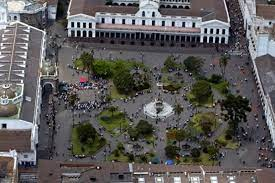

Plaza Grande
La Plaza Grande, ubicada en el corazón del Centro Histórico de Quito, Ecuador, es el principal espacio público de la ciudad y un sitio de gran importancia histórica y cultural. Rodeada por edificios emblemáticos como el Palacio de Carondelet (la sede presidencial), la Catedral Metropolitana y el Palacio Arzobispal, la plaza ha sido escenario de numerosos eventos históricos y culturales a lo largo de los años. Es un lugar de encuentro popular, con áreas verdes y bancos para el descanso, y se utiliza para eventos públicos y ceremonias oficiales. La Plaza Grande es un punto focal para la vida social y política de Quito.
| Días | Horas |
| Lunes | 24h |
| Martes | 24h |
| Miercoles | 24h |
| Jueves | 24h |
| Viernes | 24h |
| Sábado | 24h |
| Domingo | 24h |